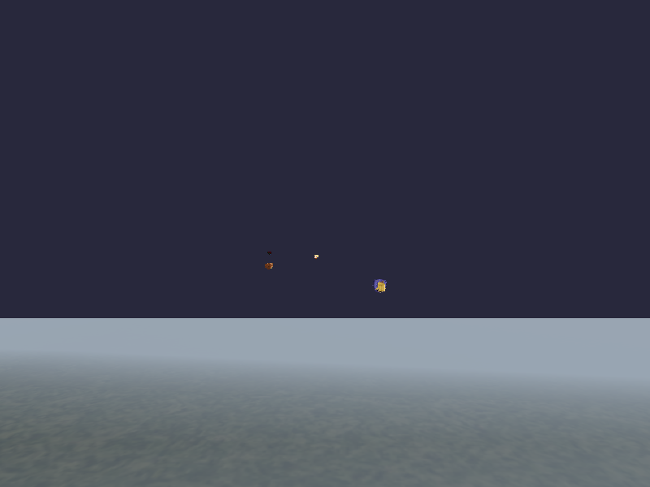
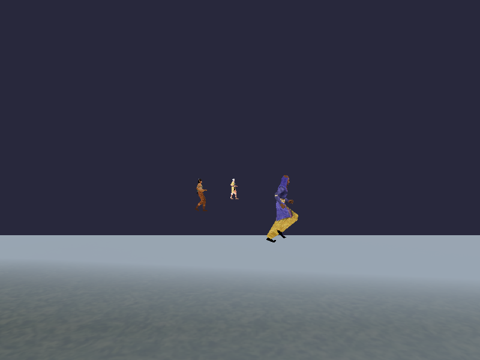
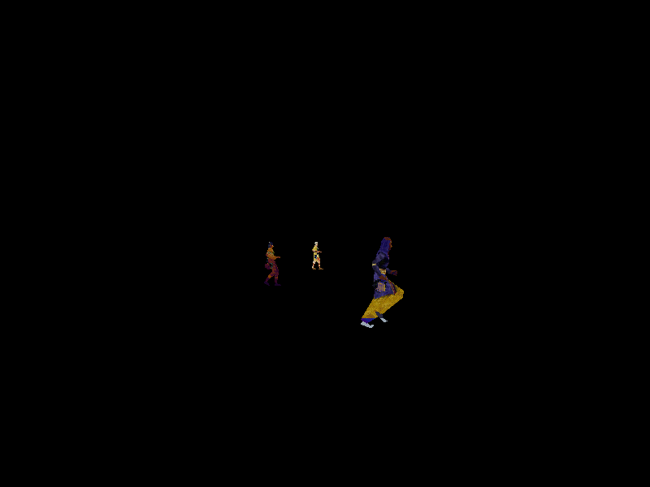
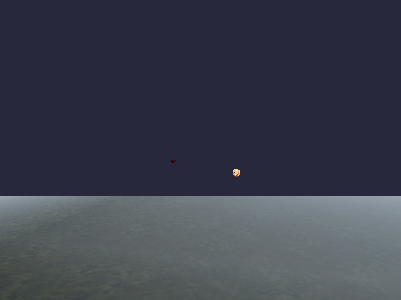
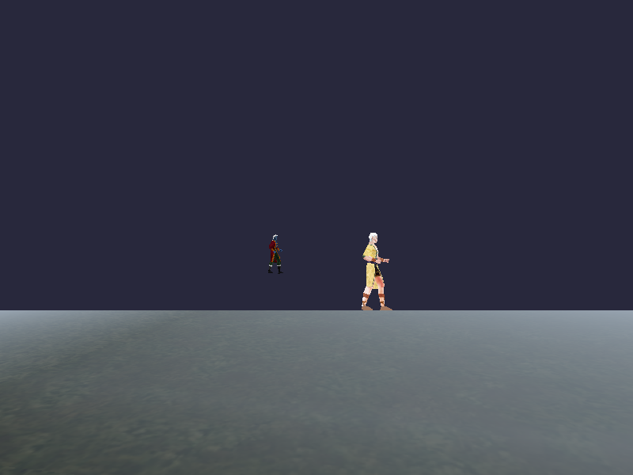
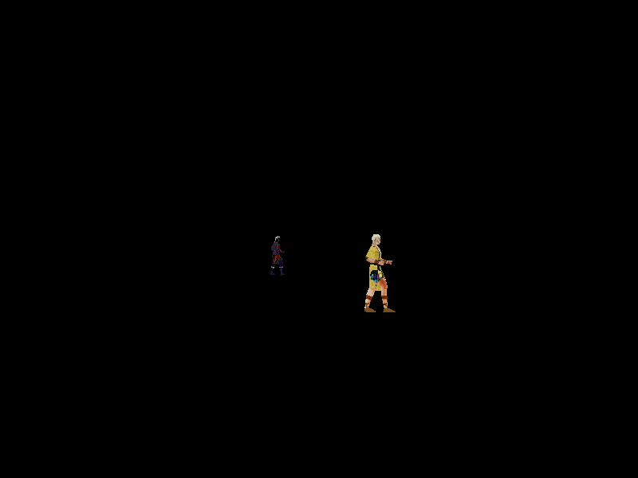
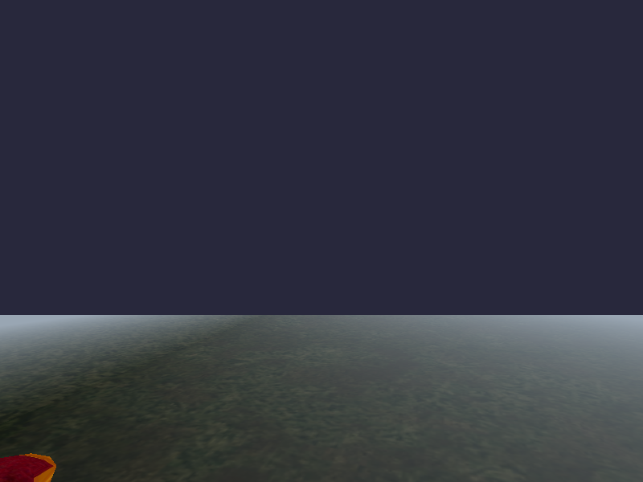
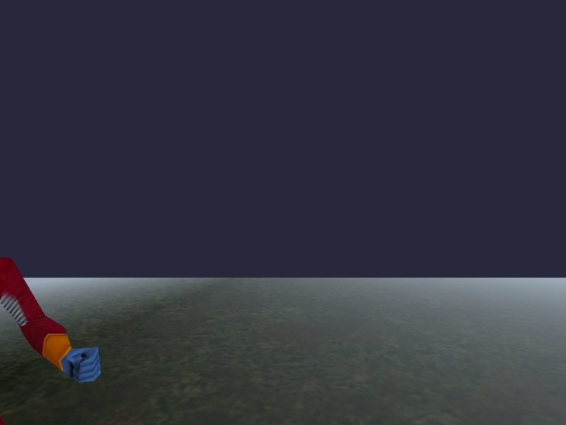
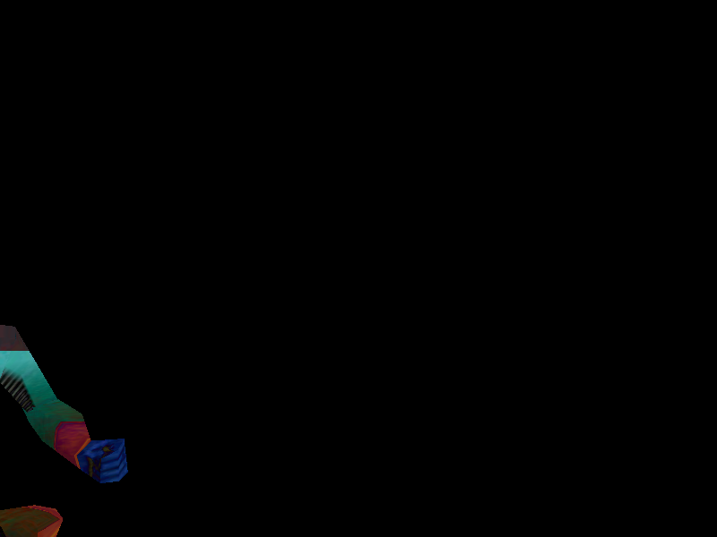

Both runs use gles2_zone_benchmark --animate --entities 6 --seed 42 on the SAME dumped/replayed camera path (--dump-path / --path-file), so any pixel difference is attributable ONLY to composite vs multi-buffer entity texturing, not camera drift. The composite run used the real production compositeEntityPath pipeline (RaceModelLoader::setCompositeEntityPath -> preloadModelData JSON+EQE1 lookup -> buildCompositeMeshFromGeometry) against the real pre-baked sheets at /mnt/projects/EverQuest_ETC1 (confirmed compositeData=YES for all 12 races used, see stdout log). Expect near-identical output (same texels, repacked into one sheet) -- quantified below, not self-declared acceptable; Will blesses.








